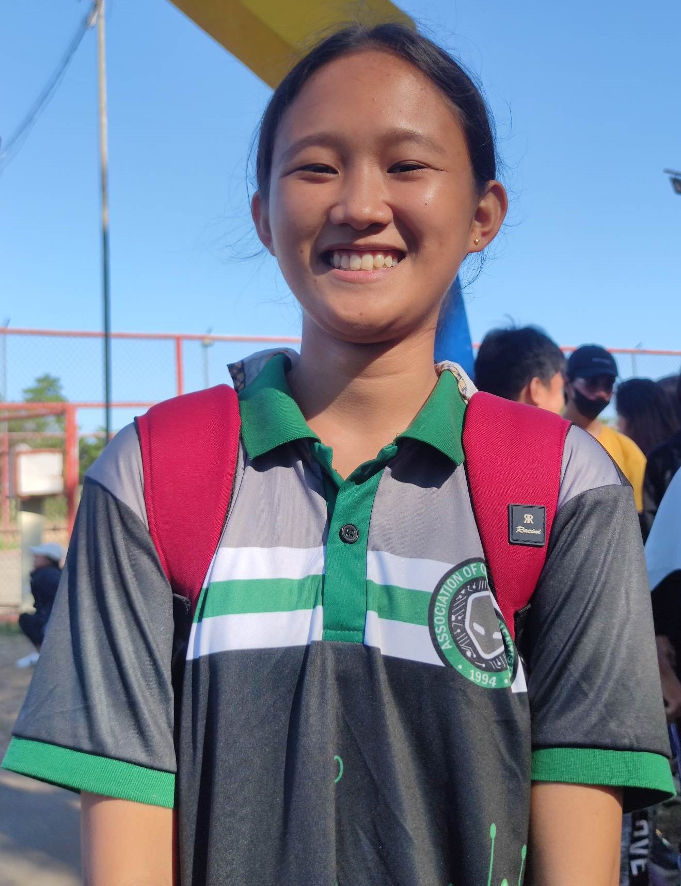

Sip, Relax, Repeat.
Explore MenuThanks-a-Latte is not just a place to sip coffee; it's an embodiment of passion, dedication, and the belief that every cup poured and every plate served is an opportunity to uplift spirits. Rooted in history, upheld by strong values, and driven by an unwavering commitment to quality, it stands as a safe place where patrons step in as guests and leave as cherished friends, carrying with them the memory of an exceptional experience.
Owner
Hi! I am Ms.Jeha Batoon, I am a Barista and i really love serving people. I use to cherish this words "Cafes teach us that even the darkest hours can be softened with a little cream and sugar."

Staff
"A cup of coffee is a reminder that there's beauty in both beginnings and pauses." Hi! I am Nikita. I love giving people a smile on their faces before and after they leave the cafe.
Have questions or feedback? Reach out to us...